Climates of the Future
EES 3310/5310
Global Climate Change
Jonathan Gilligan
Class #17: Friday, Sept. 28 2018
Live web page: https://ees3310.jgilligan.org/Slides/Class_17
PDF: https://ees3310.jgilligan.org/Slides/Class_17/EES_3310_5310_Class_17_Slides.pdf Navigate slides: next: N or <space>; previous: P or <backspace>
Also: up, down, left, right arrows; overview: o; help: ?
PDF: https://ees3310.jgilligan.org/Slides/Class_17/EES_3310_5310_Class_17_Slides.pdf Navigate slides: next: N or <space>; previous: P or <backspace>
Also: up, down, left, right arrows; overview: o; help: ?
Principles of Computer Modeling
- Make models as simple as possible:
- Start simple
- Add complexity only as needed
- Different models for different purposes
- Check model against real world
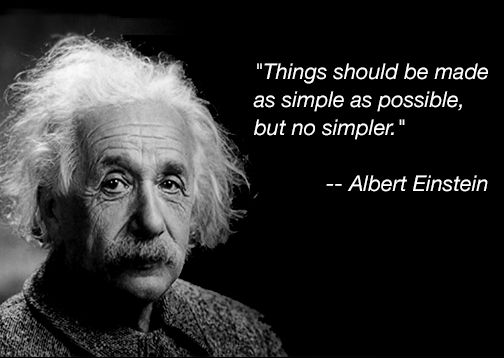
Transient vs.
Equilibrium Response
Transient vs. Equilibrium Response
|
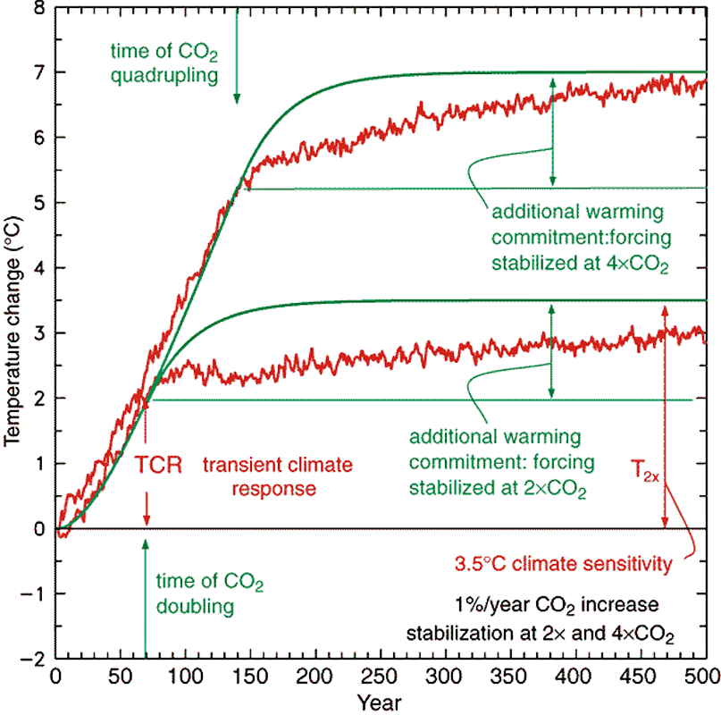 |
Modeling for
Science vs. Policy
Modeling for Science vs. Policy
Integrated Assessment Models (IAMS)
- Combine climate system and world economy
- Emissions as a consequence of economic activity
- Energy use for production
- Energy use for consumption
- Farming
- Climatic impacts on economy
- Cost of severe weather
- Sea level rise
- Droughts & heat waves
- …
- Emissions as a consequence of economic activity
- Optimize for greatest net economic output
Climate Projections
- Biggest uncertainty in predicting future climates is GHG emissions
- We can predict consequences of emissions
- We can’t predict what emissions will be
- Scenarios and Pathways:
- Scenario: possible future,
- Story of economic & political development \(\rightarrow\) resulting emissions
- Pathway: possible future,
- Trajectory of emissions \(\rightarrow\) economic activity that might cause them
- Scenario: possible future,
- Projections:
- Conditional predictions:
- “If emissions do this, then climate will do that.”
- Conditional predictions:
Projections for future emissions in US:
| 2010 | 2050 | Growth rate (% per year) | |
|---|---|---|---|
| g ($/person) | 42,300 | 83,700 | 1.7 |
| ef (tons/$million) | 432 | 226 | -1.6 |
| P (millions) | 309 | 399 | 0.6 |
| Total Emissions \(F\) (million tons CO2) |
5,640 | 7,550 | 1.7 - 1.6 + 0.6 = 0.7 |
Projections for future world emissions:
| 2010 | 2050 | Growth rate (% per year) | |
|---|---|---|---|
| g ($/person) | 9,780 | 22,400 | 2.1 |
| ef (tons/$million) | 522 | 278 | -1.6 |
| P (millions) | 6,410 | 9,170 | 0.9 |
| Total Emissions \(F\) (million tons CO2) |
34,900 | 57,600 | 2.1 - 1.6 + 0.9 = 1.4 |
Uncertainties in Projections
Projections for future world emissions:
| 2010 | 2050 | 2100 | Growth rate | |
|---|---|---|---|---|
| g | 9,780 | 22,400 | 64,737 | 2.1 |
| ef | 522 | 278 | 123 | -1.6 |
| P | 6,410 | 9,170 | 14,409 | 0.9 |
| Emissions | 34,900 | 57,600 | 115,366 | 1.4 |
| Difference (%) |
Uncertainties in Projections
Projections for future world emissions
with slightly different growth rates:
| 2010 | 2050 | 2100 | Growth rate | |
|---|---|---|---|---|
| g | 9,780 | 24,540 | 77,505 | 2.3 |
| ef | 522 | 298 | 148 | -1.4 |
| P | 6,410 | 9,563 | 15,766 | 1.0 |
| Emissions | 34,900 | 69,973 | 180,930 | 1.9 |
| Difference (%) | 22% | 57% |
Decisions Under Uncertainty
- Global Climate change:
- Great Certainty:
- People are warming the planet.
- Warming will continue long after CO2 stops rising.
- Changes will persist for thousands of years.
- Uncertain:
- How much will planet warm (factor of ~2).
- Great Certainty:
- Impacts of Global Climate Change:
- Fairly Certain:
- Severe heat waves will get worse.
- Drought will get worse for much of the planet.
- Intense rain & floods will get worse.
- Very Uncertain:
- Hurricanes & tornadoes.
- Fairly Certain:
- Local/Regional Climate Change
- Fairly certain about some detailed local impacts.
- Enormously uncertain about others.
Consequences of Climate Change
- Economic effects:
- Costs of acting
- Costs of inaction
- Uncertainties
- Policy issues:
- Markets vs. Regulation
- Externalities
- Kaya Identity: \(F = P \times g \times e \times f\).
- Markets vs. Regulation
Tipping points
What we know about tipping points
- Very hard to predict them.
- Climate Casino: important tipping points:
- Ice sheet melting
- Coral reefs
- Tropical rain Forests
- Runaway greenhouse gas release
- Slowdown of ocean conveyor belt circulation
- …
Abrupt Climate Change
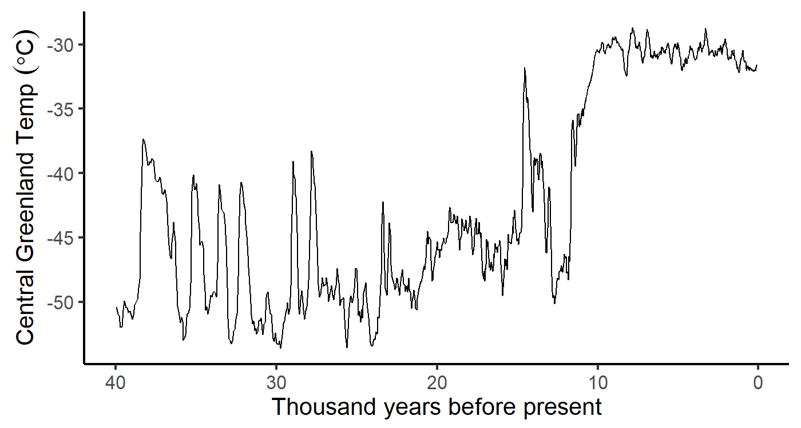
Abrupt Climate Change
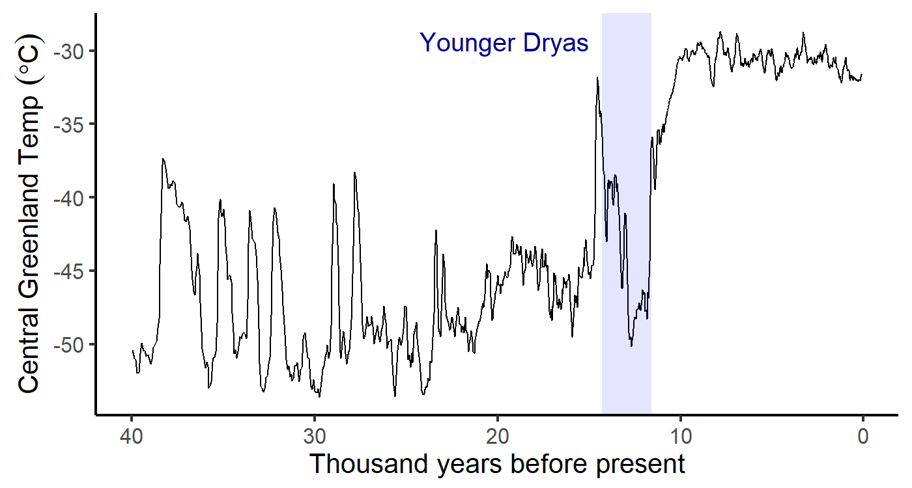
Bistability & Tipping Points

Hysteresis and Tipping Points
GRANTISM Model
Hysteresis:
Temperature and Ice Sheets
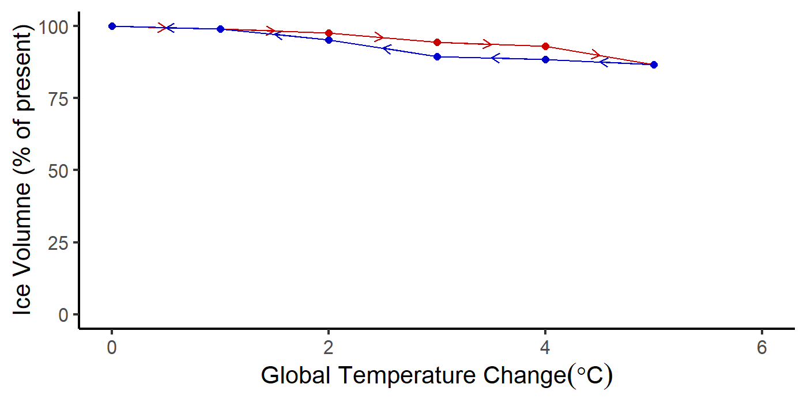
Hysteresis:
Crossing Tipping Point
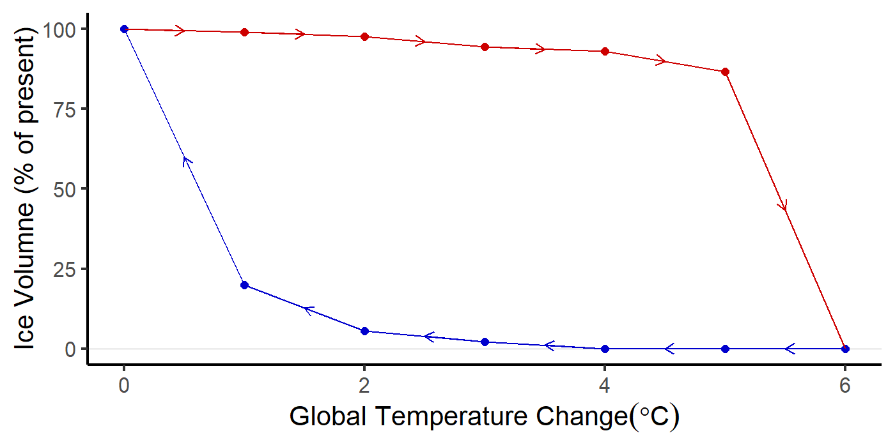
Principles of Tipping Points
- Ordinary positive feedbacks amplify changes
(hot → hotter, cold → colder).- Small positive feedbacks amplify but the system remains stable.
- If positive feedbacks are too strong they become self-perpetuating.
- Secondary forcing from feedback creates unstoppable change.
- If feedback strengthens with warming:
- Tipping point: feedback becomes strong enough
to continue warming independent of external forcing.
- Tipping point: feedback becomes strong enough
- Not all positive feedbacks have tipping points.
- Hard to predict when a positive feedback might go from amplifying to runaway (tipping point).
Where are they?
- Climate Casino: No big danger of fast tipping points if warming stays less than 3°C
- But, recent research finds that West Antarctic Ice Sheet has already crossed irreversible tipping point.
But Can We
Trust the Experts?
But Can We
Trust the Experts?
Did temperatures stop rising 18 years ago?
Look at 1970–2014
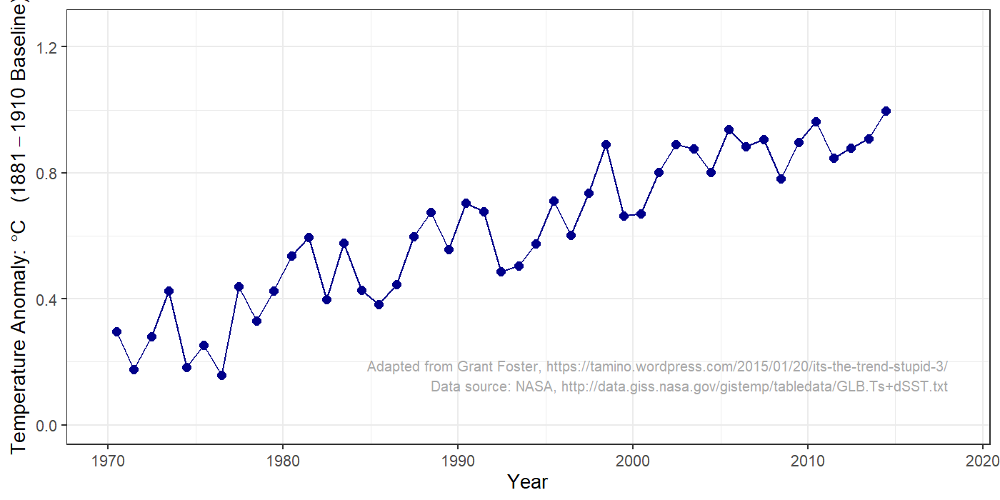
Did temperatures stop rising?
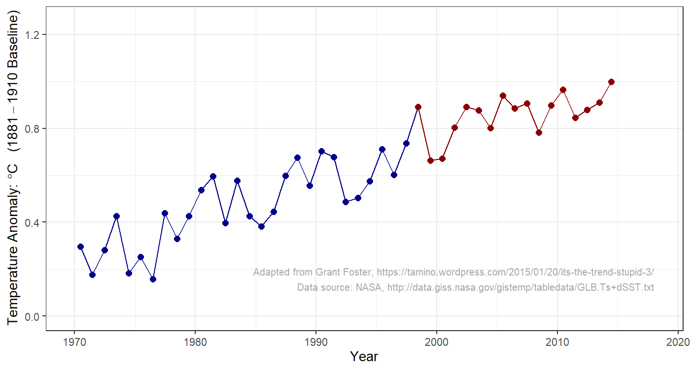
Did temperatures stop rising?
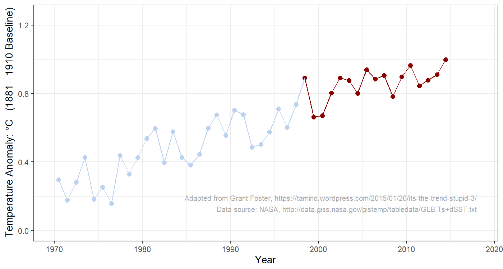
Did temperatures stop rising?
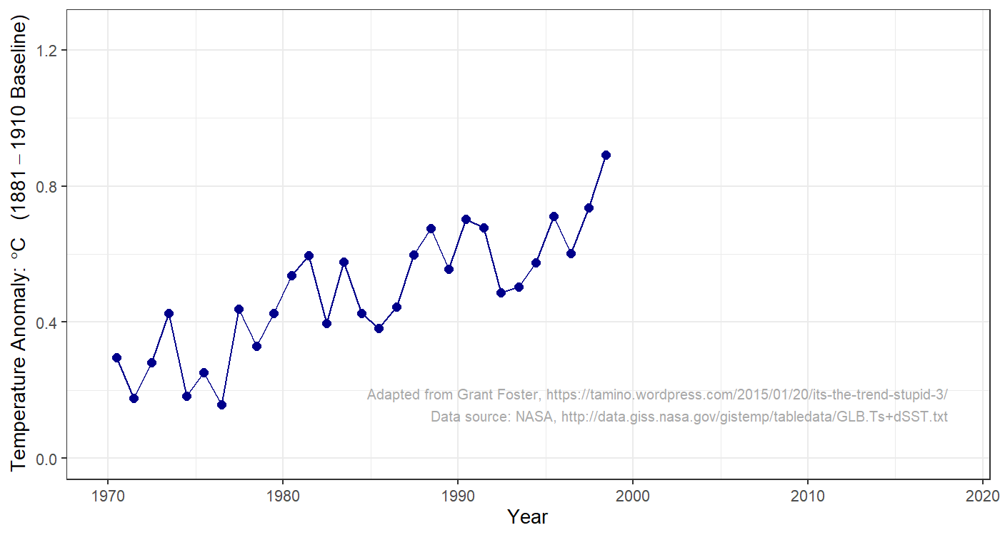
Did temperatures stop rising?
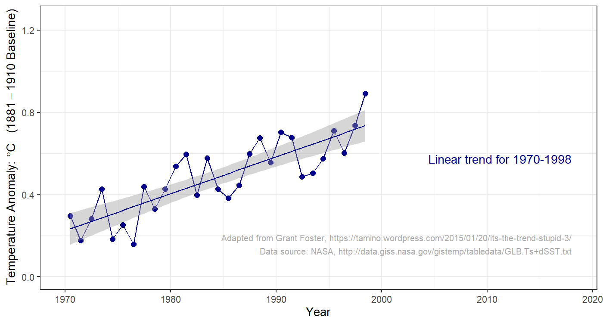
Did temperatures stop rising?
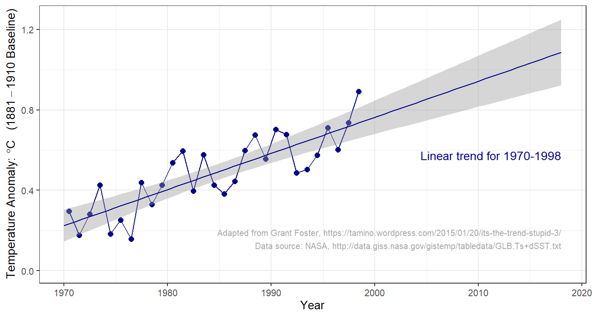
Did temperatures stop rising?
Did temperatures stop rising?
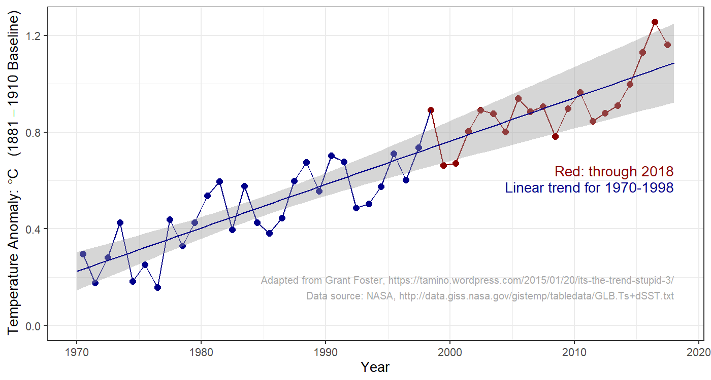
What is the Scientific Consensus?
What is the Scientific Consensus?
- Is there a consensus?
- If there is, should we trust it?
What is the Scientific Consensus?
- Is it important whether most scientists agree or not?
- What if some scientists disagree?
- Do most scientists agree?
- Careful reviews of scientific literature find 95% of scientists publishing about climate change believe planet is warming because of human activity.
Dissident Scientists
Peter Duesberg
|
|

|
Kary Mullis
|
Meaning of Consensus
- Does scientific consensus mean we can be
100% certain that people are warming the planet? - What about the future impacts of climate change?
What Gets in the Way of Policy?
What Gets in the Way of Policy?
- Politicians don’t understand science?
- Public doesn’t understand science?
- Scientists don’t understand politics?
Issues for Policy
- What do scientists agree on?
- Should policy focus on CO2?
- Should policy focus on limits to CO2 or \(\Delta T\)?
- Should policy wait for better scientific certainty?
- Uncertainty:
- How much warming is “dangerous”?
- How much CO2 would produce dangerous warming?
- Are there tipping points?
- If so, where are they?
1979 Report
Carbon Dioxide and Climate:
A Scientific Assessment
The conclusions of this brief but intense investigation may be comforting to scientists but disturbing to policymakers. If carbon dioxide continues to increase, the study group finds no reason to doubt that climate changes will result and no reason to believe that these changes will be negligible. … A wait-and-see policy may mean waiting until it is too late.
National Research Council, Carbon Dioxide and Climate:
A Scientific Assessment (Nat’l. Academy Press, 1979)